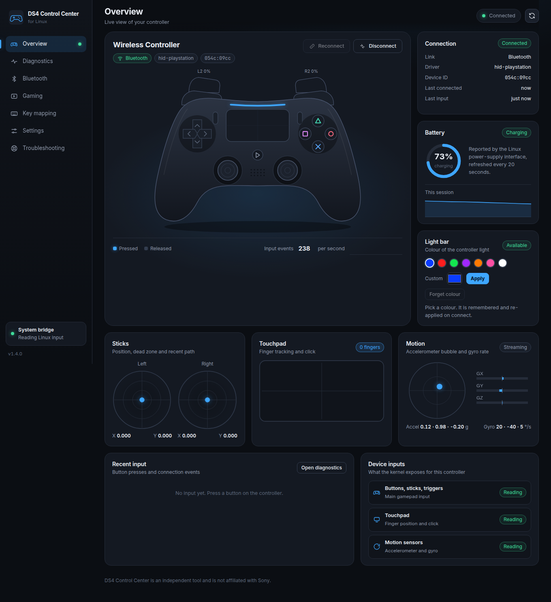
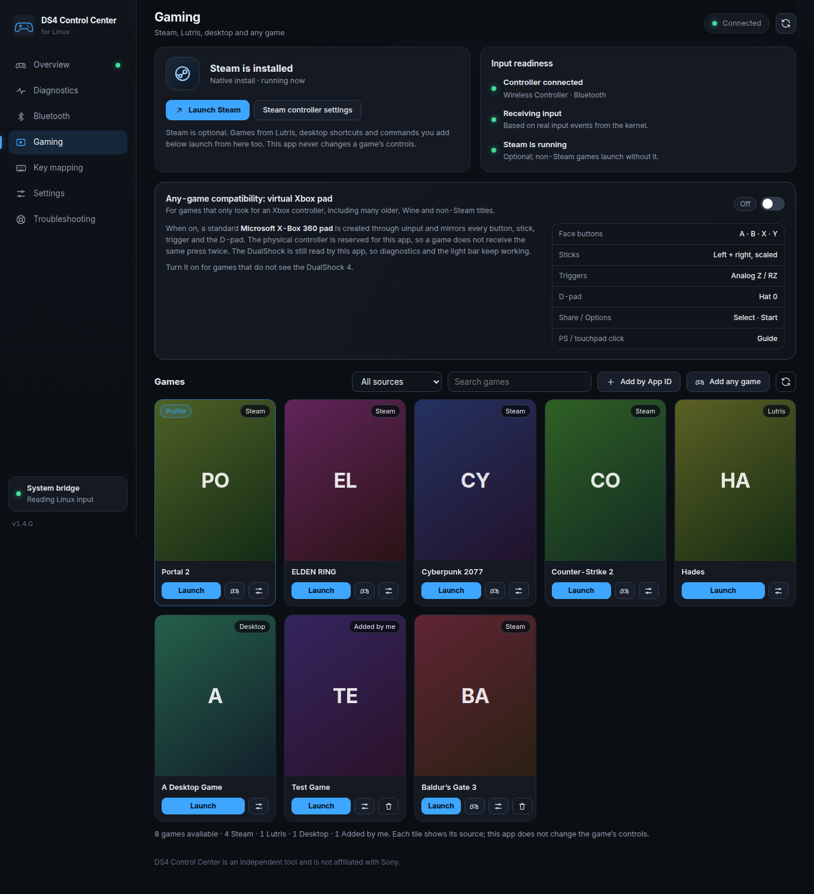
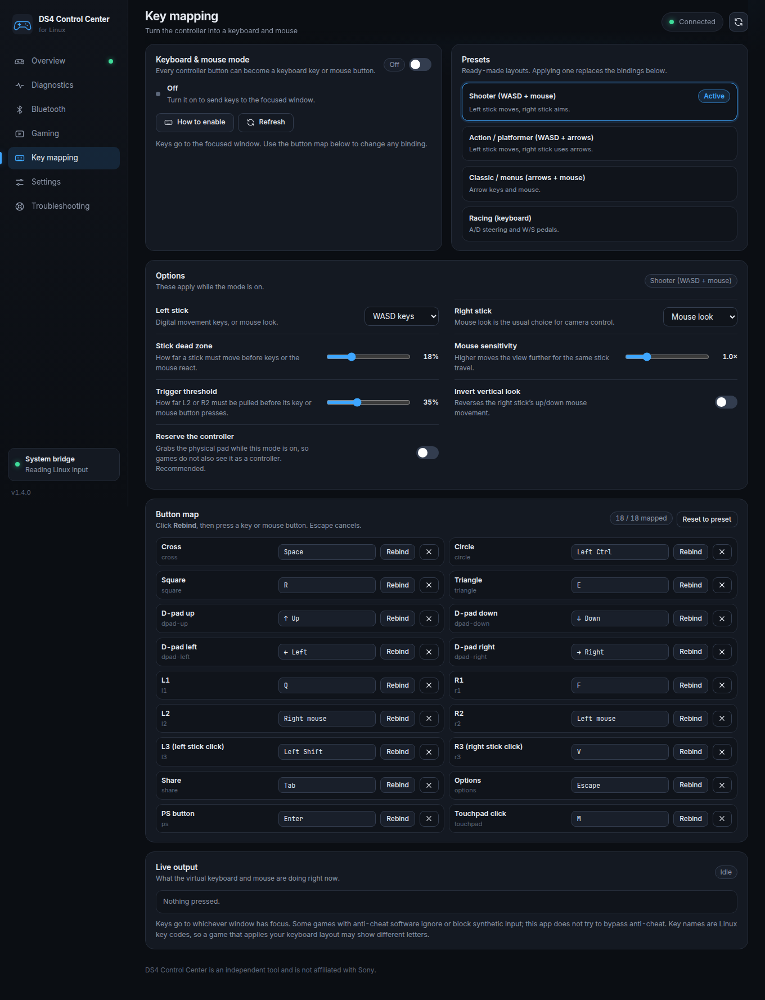

Live telemetry
See every press, stick and trigger.
Buttons glow, sticks move, triggers fill with real analog pressure. Touchpad fingers and motion sensors update as you play.
A native Linux cockpit for the DualShock 4. Live diagnostics, Bluetooth, a library that isn't locked to Steam, a virtual Xbox pad, and full keyboard + mouse mapping — in one honest window.
git clone github.com/AbduLz0/ds4-control-center

Seven focused pages, live kernel data and zero made-up numbers. v1.4 adds the two things players asked for most: support for games outside Steam, and a real keyboard mapper.
Buttons glow, sticks move, triggers fill with real analog pressure. Touchpad fingers and motion sensors update as you play.
Steam, Lutris, desktop shortcuts and hand-added commands in one source-filtered library. Profiles follow the game that is actually running.
A standard virtual Xbox 360 pad mirrors every button, stick, trigger and D-pad direction. The physical controller is reserved so nothing doubles up.
Left stick becomes WASD, right stick becomes mouse look. Rebind all eighteen inputs, or start with a preset.
Key mappingA five-second drift test, circularity map, eighteen-button tester and trigger graph. Diagnostic hints — not a made-up calibration.
No invented battery percentages. No fake connections. No “probably fine”. When something is unavailable, you see unavailable — and the troubleshooting page tells you why.
Steam is optional. DS4 Control Center reads Lutris, desktop shortcuts and commands you add yourself, then launches everything from one place.

Left stick WASD, right stick mouse look, L2 aim, R2 fire. Start with the shooter preset, then rebind any of the eighteen inputs and tune the curve to your hand.

Captured from the real frontend with simulated controller data for documentation. Click any screen to open it full-size.
Screenshots use the real frontend and simulated test data. They do not demonstrate physical-controller or in-game compatibility.
The installer explains every package and asks before running apt. The app runs as your normal user and refuses to run as root.
Keyboard mode and the virtual Xbox pad need write access to /dev/uinput. The helper adds one udev rule after asking for confirmation.
./scripts/enable-uinput.sh# 1. clone the repository
$ git clone https://github.com/AbduLz0/ds4-control-center.git
$ cd ds4-control-center
# 2. install dependencies (asks before apt)
$ ./install.sh
# 3. launch the dashboard
$ ./run.sh
# optional: add to the application menu
$ ./install-desktop-launcher.shWhat works, what needs a permission, and what this app deliberately refuses to fake.
Ask on GitHubYes. The library reads Steam, Lutris, desktop shortcuts and commands you add manually. For games that only look for Xbox-style controllers, switch on the virtual Xbox 360 pad. It needs write access to /dev/uinput; the optional helper adds that safely.
No. The app runs as your normal user and refuses to start as root. Only the optional uinput helper uses sudo, to install one udev rule and a module-load entry, after explaining exactly what it will do.
Keys go to the focused window, so click the game first. Games with anti-cheat may ignore or block synthetic input, and this app does not try to bypass anti-cheat. If the game also sees the physical pad, enable Reserve the controller.
The app shows unavailable or read-only and explains why on the Troubleshooting page. Battery “N/A” is not 0%, and a read-only light bar is not a colour the app can change.
Avoid stacking remappers. Turn Steam Input off for a title when you use the virtual Xbox pad or this app's keyboard mapping, otherwise two layers may fight over the same controller.
Run ./uninstall.sh to remove the launcher, autostart entry and virtual environment. If you installed the optional uinput rule, remove it with ./scripts/enable-uinput.sh --remove.
Diagnose the drift, find every game, map every button. Open source, built for Linux, honest by default.